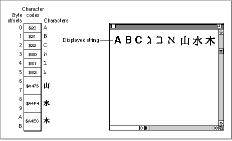

Pascal Strings and Text Strings
This chapter describes many routines, almost all of which operate on strings that are specified in one of two forms: as Pascal strings or as text strings. These are two ways of representing text characters, each of which has advantages and disadvantages relative to the other.A Pascal string is an array of characters, the first byte of which defines the number of bytes that follow. This is the standard representation of strings used in Pascal programming. Most of the Text Utilities routines that use Pascal strings use the
Str255orStringHandletype. An advantage of theStr255type is that it can be passed directly as a single parameter on the stack. A disadvantage is that aStr255value can hold only up to 255 bytes of character data. A typical Pascal string parameter declaration is as follows:PROCEDURE MyUsePascalString (str: Str255);The alternative representation for character data, a text string, can contain up to 32,767 bytes of character data and is specified by two parameters: a pointer to the first byte of character data and a 16-bit integer length value. A typical declaration of a routine that uses a text string parameter declaration is as follows:PROCEDURE MyUseTextString (textPtr: Ptr; textLen: Integer);Some of the Text Utilities routines have been modified to allow for even longer strings. These routines allow a 32-bit integer length value, which means that they can operate on text strings of up to approximately two billion bytes in length.Figure 5-2 A string containing 1-byte and 2-byte characters[Missing image]
- IMPORTANT
- Length is specified in bytes, not characters, for both Pascal strings and text strings. In international text processing, two bytes are sometimes required to represent a single character in certain fonts, as illustrated in Figure 5-2. Because you have to accommodate both 1-byte and 2-byte characters in the same string, the length of each string cannot be specified as a number of characters.

